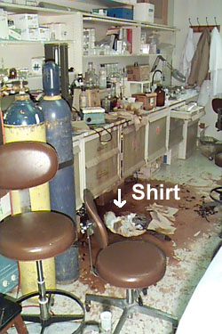

Spill + Slip = UK Lab Worker Injury
| A UK researcher was testing the pH of a four liter container of hazardous waste when the bottle fell and burst. The waste contained acetonitrile, methanol, ether, mineral oil, water, thionyl chloride, acetic acid, acetyl chloride, and potassium hydroxide. The researcher fell in the slippery liquid chemicals, hitting his head extremely hard on the floor. The entire side of his body was saturated in the liquid solution. He took off his lab coat and shirt and rinsed his eyes in the faucet-mounted emergency eyewash located in the lab. With the assistance of a staff member across the hall, he walked to the emergency room to be treated for lacerations and eye burns. |  |